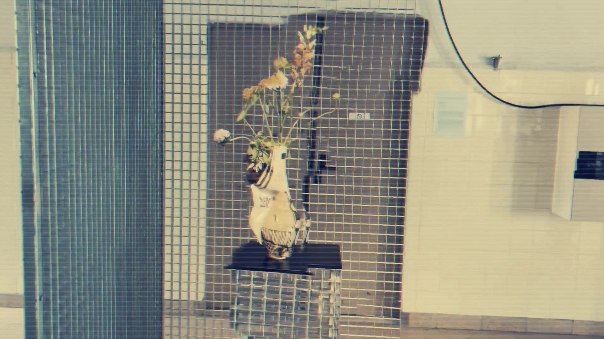
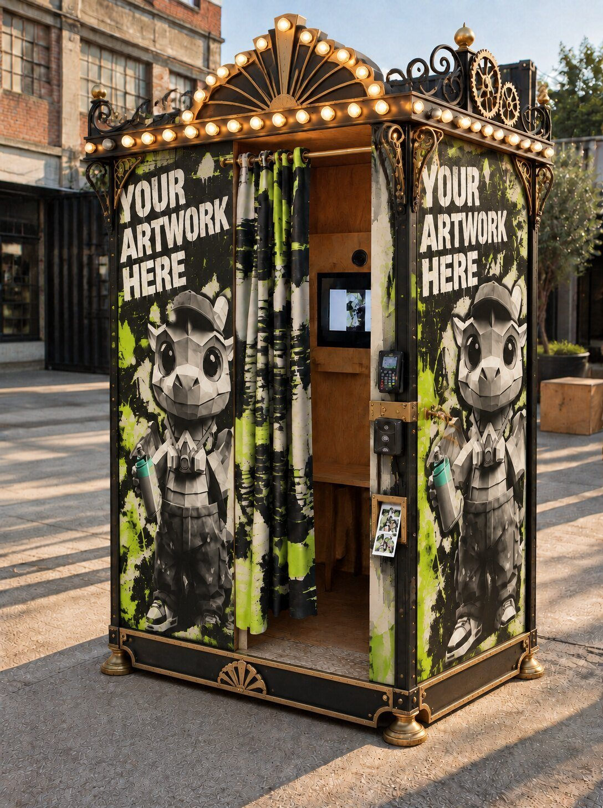
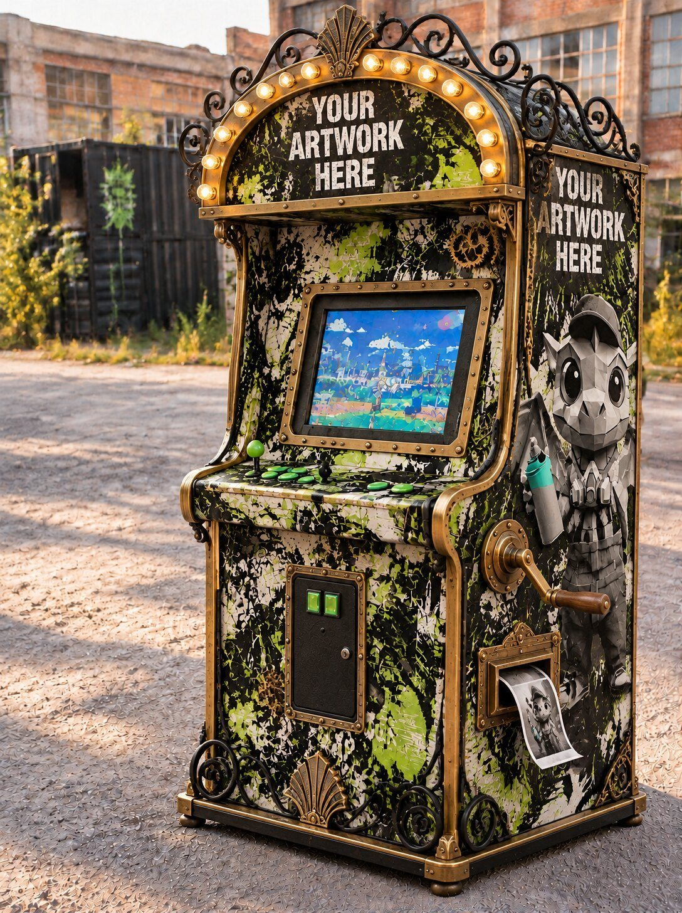
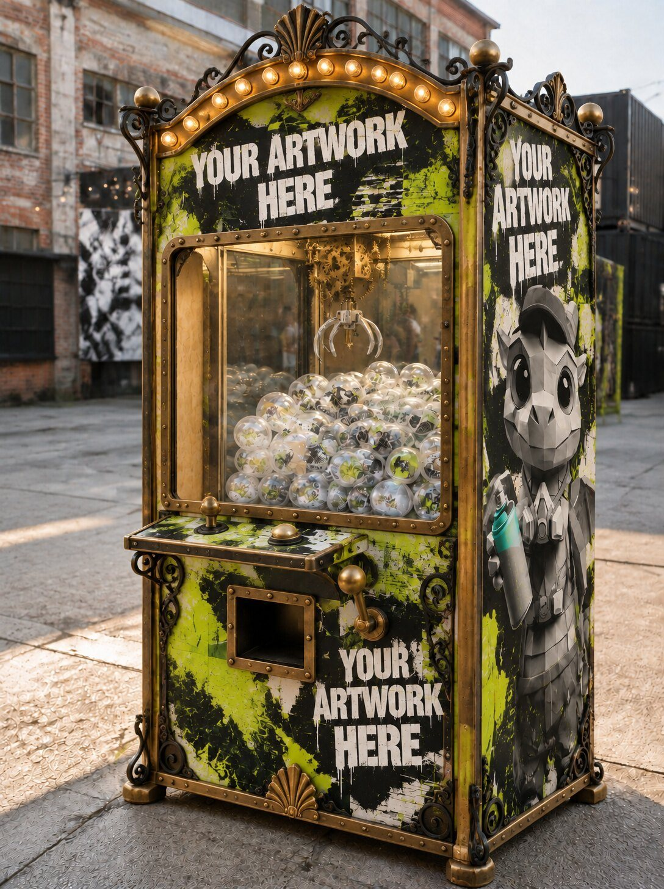

Lisbon · February — October 2027
FAIR PLAY
An art exhibition you can play. Artists build the rides, AI runs inside.
By NFC Summit, the digital art festival of Lisbon

In 2027, Lisbon is the city of AI and creativity.
A museum show on AI, Devcon, Web Summit and NFC Summit, in one year.
FAIR PLAY is its art show.
The one you can play.
In short
What it is
An art exhibition
Curated. Every ride is a work by an artist.
You can play
One minute per ride. AI turns your game into an artwork.
For everyone
Locals, families and every crowd that visits Lisbon in 2027.
All year
From February to October, with a premiere at NFC Summit.
FAIR PLAY — the art show you can play
04
Why Lisbon, why 2027
One city, one year
27 — 29 May
NFC Summit, sixth edition: digital art and culture
15 September
MAAT opens “Energies of AI”: Steyerl, Paglen, Crawford & Joler
October
Devcon: the Ethereum world comes to Lisbon
November
Web Summit
FAIR PLAY is the thread between them.
FAIR PLAY — the art show you can play
05

The rule
Everyone leaves
with art.
How every ride works
One minute,
one artwork
You pay for an artwork, never for a chance.
01
Pay
Tap a card or a phone. No app, no account.
02
Play
Sixty to ninety seconds. A camera watches you.
03
Generate
AI turns your face and your score into a piece in the artist’s world.
04
Win
Everyone gets a print. Beat the target for an edition.
FAIR PLAY — the art show you can play
07
The fair
Thirty machines, eight rides
Ten photobooths, ten arcades, ten claws: one artist per machine. And eight signature rides that each ask a question.
01
The Oracle
Why do we trust a voice?
02
The Wheel of Odds
Chance or prediction?
03
The Two-Hand Claw
When do you delegate?
04
The Hall of Doubles
What am I to a model?
05
The Train of Layers
What happens inside?
06
The Agents’ Arena
What is a fair rule?
07
The Robot Portraitist
Who is the author?
08
The Dance Mirror
Who leads, who follows?
FAIR PLAY — the art show you can play
08

Up close
Three
examples.

Example 1 of 3 · concept visual
The photobooth
A wooden cabin, a curtain, an artist’s world.
01
You sit down and pull the curtain.
02
The camera takes your portrait.
03
The artist’s model remakes it in their style.
→
You leave with your portrait, printed.
FAIR PLAY — the art show you can play
10

Example 2 of 3 · concept visual
The arcade
A cabinet in the artist’s colours, a 90-second game.
01
You play a short game designed with the artist.
02
Your score and your face go to the model.
03
It generates a piece that only this game could make.
→
You leave with the artwork your score made.
FAIR PLAY — the art show you can play
11

Example 3 of 3 · concept visual
The claw
A real claw machine, presented as an installation.
01
You steer the claw over a sea of capsules.
02
Each capsule holds a work: a print, an object, an edition.
03
One capsule holds a unique piece.
→
You leave with what you caught.
FAIR PLAY — the art show you can play
12

On the walls and screens of NFC Summit 2026
The artists are already here
XCOPY · Dmitri Cherniak · Larva Labs · Jack Butcher · Kim Asendorf · Gretchen Andrew · Vhils · Hackatao · Botto · Efdot · Coldie · Operator
The FAIR PLAY line-up is chosen by an independent curator, from this network and beyond.
FAIR PLAY — the art show you can play
13
The season
A year of moments
February
Online hackathon and art jams: anyone can prototype a ride
March — May
Residencies: the artists build with the partner’s tools
27 — 29 May
Premiere at NFC Summit, with the Hackathon · AI Day
September
A panel and activations as MAAT opens “Energies of AI”
October
Finale during Devcon week
In between, the fair travels across Lisbon. Web Summit follows in November.
FAIR PLAY — the art show you can play
14

Who is behind it
NFC Summit, sixth edition in 2027
2,740
Visitors in 2026
79
Countries
200+
Artists exhibited
150+
Speakers
1,000
Artists in the NFC network
6M+
Organic impressions
In 2026: container galleries by OpenSea, the exhibition SYSTEMS presented by Arab Bank Switzerland
15
For a founding partner
Your part.
01
Your models inside the rides.
02
Your team in the residencies.
03
Your name on the season.
Our part.
The artists
A curated line-up, paid and credited.
The fair
Machines, booths, staff, payment and printing.
The audiences
Digital art in May, Lisbon all year, Ethereum and tech in the autumn.
FAIR PLAY — the art show you can play
16


FAIR PLAY · Lisbon 2027
Build a ride
A 20-minute call, then a proposal made for your team.
John Karp · john@nonfungibleconference.com · t.me/thejonnkarp